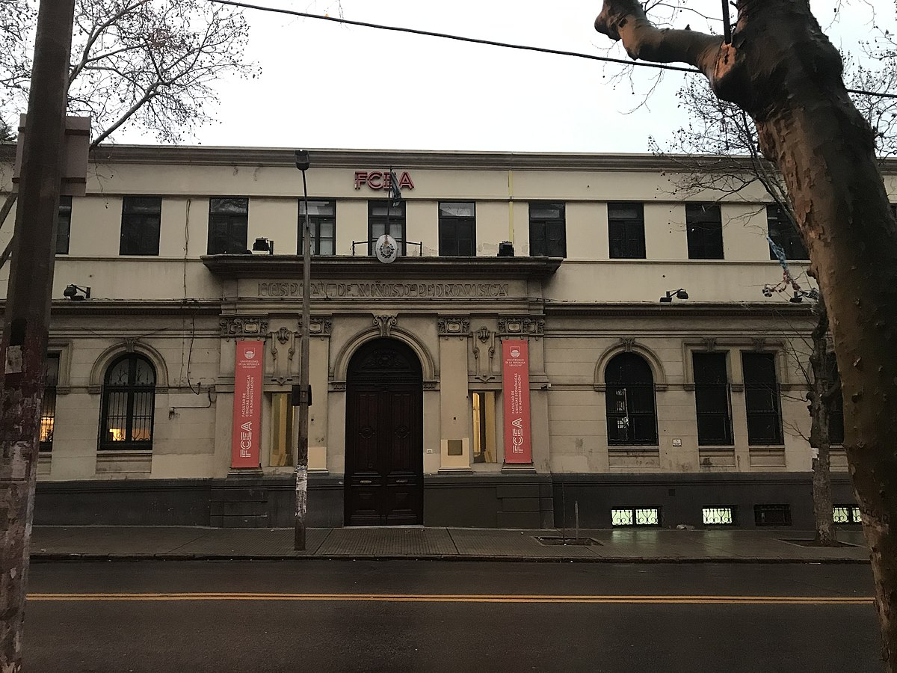

Portafolio Martin Amaral
Estudios

Estudiante de Contaduria durante los años 2014 a 2021, con materias salvadas importantes como:
Derecho Tributario
Modelo y sistemas de costos
Legislacion laboral y seguridad social
Gestion financiera del Estado
Experiencia Laboral
Telemarketer 2015-2016
Asistente Contable 2017-2020